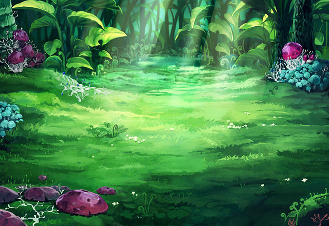

モーラ
なかなかやりますね…。 ここまでお強いとは、予想外でしたよ。
モーラ
ですが、さすがに疲労の色は 隠せない様子ですね…。
モーラ
下等な魔獣が…。 私にまで牙をむきますか…？
モーラ
あの魔獣は獲物が分散しても、 分身体を作って追いかける習性があります。
モーラ
おそらくは、 あなたを追いかけて来たのでしょう…。
モーラ
どうやらその傷では、 手当も無駄のようですね。
モーラ
あなたの調査、分析能力には 注目していたので、
モーラ
殺すつもりはなかったのですが…… ……残念です。
モーラ
魔神、魔獣ひしめくこの地に足を踏み入れた 己の運命として受け入れて下さい。
アイリス
こん…な…ところ…で……。 これを……届け…な…け……。
モーラ
魔力を帯びた水晶…？ いえ、何かの記録機器のようですが…。
モーラ
どうやらあなたは、私が考えていた以上に 警戒すべき人物だったようですね。
モーラ
一時的にとはいえ、私よりも先にこの世界の 秘密に近づいた者がいたということを…。